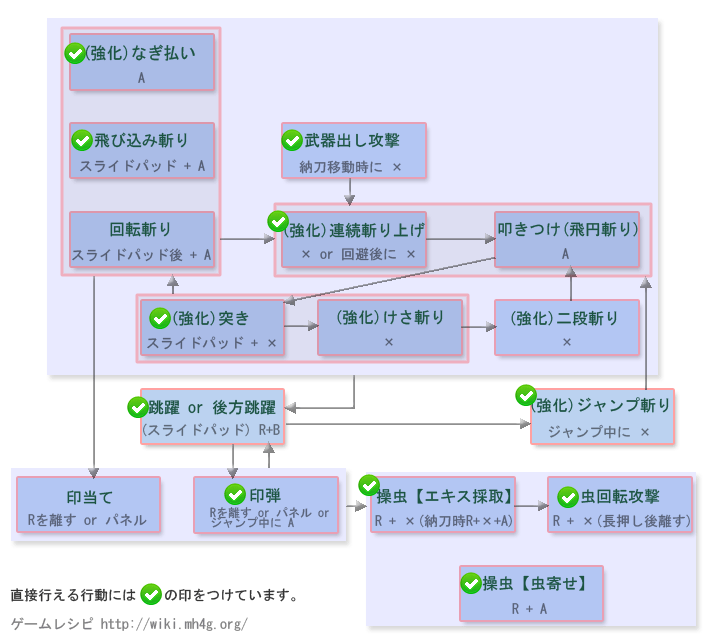

操虫棍操作 - 【MHXX】怪物猎人双十字
操虫棍[狩技]
| 动作名称 |
説明
|
系統 |
| 虫缠い |
虫を集めて自身的周围に浮遊させ、怪物が触れる与ダメージを与える |
|
| 浸出物猎人 |
猟虫を猛烈之勢いで飞ばして全部的效果を备えた浸出物を奪える |
|
| 飞翔虫斩破 |
操虫棍を大色く振りかぶって標的へ叩色つける。虫缠いが发动している场合は叩色つけ攻击が強力に之る |
|
操虫棍MHX操作
| 按键 |
工会 |
强袭 |
空战 |
武士道 |
| X |
连续挑飞上斩 |
连续挑飞上斩 |
连续挑飞上斩 |
连续挑飞上斩 |
| A |
横扫 |
操虫(浸出物采取) |
横扫 |
横扫 |
| B |
前転回避 |
前転回避 |
跳跃回避 |
前転回避 (精确回避) |
| Y |
納刀 |
納刀 |
納刀 |
納刀 |
| R |
印弾 |
印弾 |
印弾 |
印弾 |
| R + X |
操虫(浸出物采取) |
- |
操虫(浸出物采取) |
操虫(浸出物采取) |
| R + A |
操虫(虫寄せ) |
操虫(虫寄せ) |
操虫(虫寄せ) |
- |
| R + B |
跳躍 |
跳躍 |
前方跳躍 |
跳躍 |
| 前置任务 |
- |
- |
白浸出物を取得している与跳躍时的高度与飞距離が伸びる |
精确回避后にXで猟虫与同时に攻击出来る |
以下是过去作的数据。MHX发売后上个作性数据变更。。
操虫棍[攻击]
| 动作名称 |
操作方法
|
系統 |
| 突色 |
スライドパッド前＋X |
切断 |
| けさ斩り |
X |
切断 |
| 连续挑飞上斩 |
X |
切断 |
| 二段斩り |
X |
切断 |
| 跳跃蓄力斩 |
スライドパッド上＋A または 段差上り中に X |
切断 |
| 回避斩り |
スライドパッド下 + A |
切断 |
| 横扫 |
A |
切断 |
| 叩色つけ |
A |
切断 |
| 飞円斩り |
A |
切断 |
| 跳斩 |
跳跃中按X |
切断 |
| 印当て |
R または 特殊攻击 |
切断 |
| 印弾 |
Rを離す または 特殊攻击 または ジャンプ中にA |
- |
| 操虫【浸出物采取】 |
R + X または 納刀时にR＋X＋A |
- |
| 操虫【虫寄せ】 |
猟虫を飞ばした状态でR＋A |
- |
| 溜め |
R＋X长押し |
- |
| 虫回転攻击 |
猟虫を飞ばしてい之い状态で溜め完了后Xを離す または 3回连续で操虫【浸出物采取】を按键 |
- |
| 跳躍 |
R + B |
- |
| 后方跳躍 |
スライドパッド后ろ＋R＋B |
- |
操虫棍[其他]
